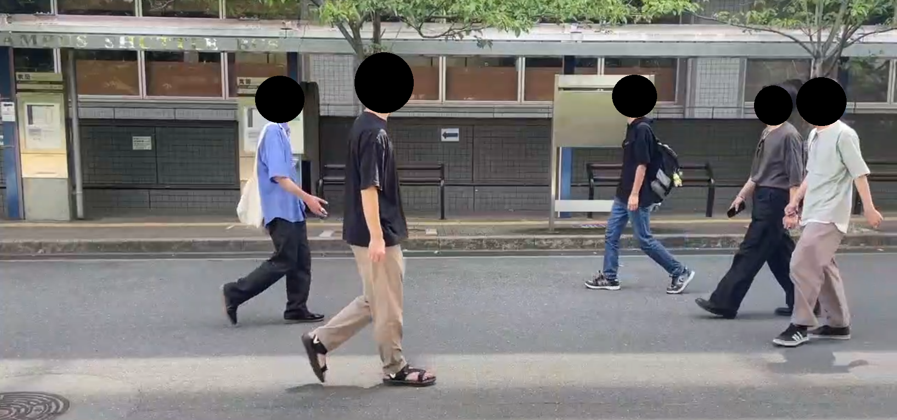
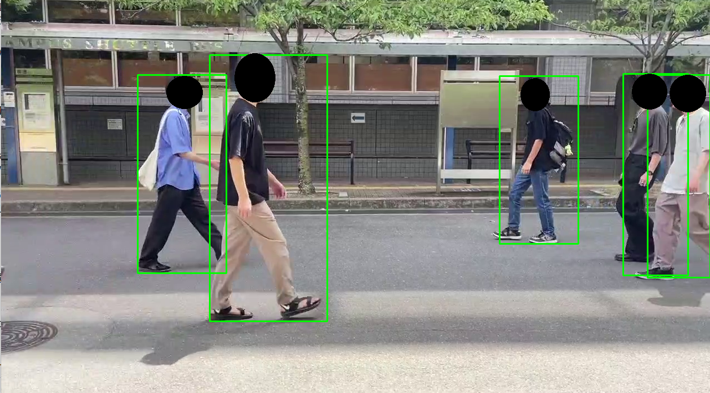
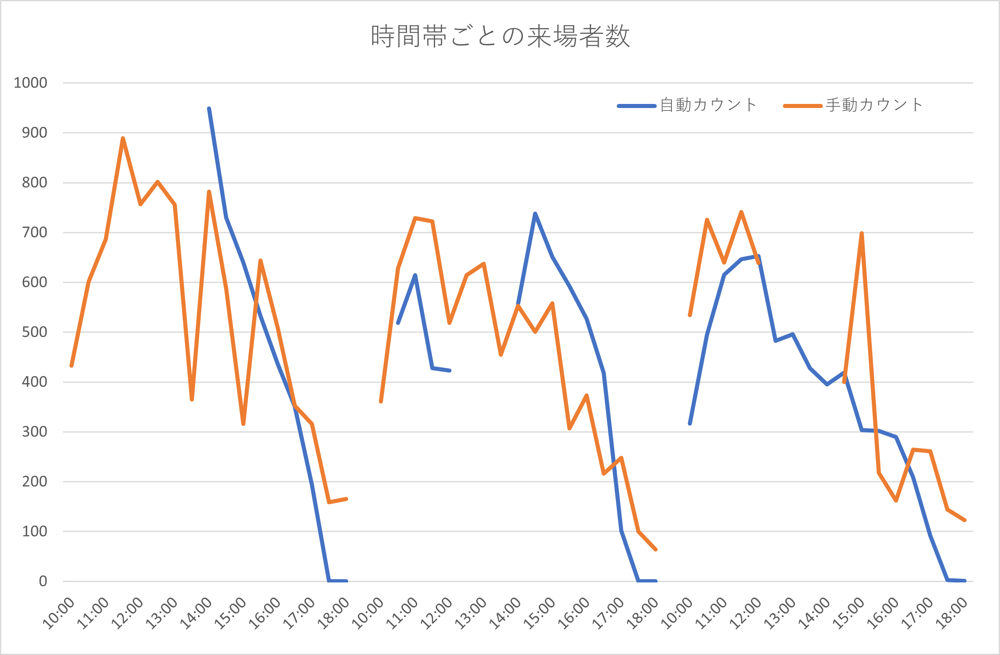

学祭に向けて人数カウンタを作った話
大阪大学の学祭実行委員会のMaltonです。
さて、弊委員会では毎年の学祭で来場者のカウントをする「カウント係」を入り口付近に配置していたのですが、自動化できないかという相談を受けたので、作ってみることにしました。
TL;DR
YoLo + BoTSORTでカメラ映像から前を通る人数のカウントをしたよ。 コードはGithubで公開してるよ
タスクと技術選定
メインストリートにカメラを1台置き、その映像のみから人数をカウントします。

（開発デバッグ用の映像 / 協力してくれた方ありがとうございました）
真上からカメラをつるすのは許されず、サーモカメラなどの人の輪郭をとらえやすいカメラも貸し出し許可が下りず、結局普通のカメラを使うことになりました。 また、基本的に複数人が固まって前を通ることを考えると古典的な画像処理だと一筋縄ではいかなさそう....というわけで深層学習ベースの認識手法に舵を切りました。 （偶然にも部内で使ってよいゲーミングノートPCが見つかったことも大きいです）
認識部分
hugging faceで「human count」「human recognition」とかで検索するもあんまりよい感じのものは見つからず、素直に万能認識モデルを使うことにしました。今回採用したのはyolos-tinyです。（これより大きいモデルはGPU1台ではかなり厳しそうだった）
サンプルコードコピペして適当に編集したところ、完璧ではないにせよ及第点くらいには認識できていたので採用しました。 
カウント部分
認識さえできればあとは単純なアルゴリズムでカウントもできるやろ！と踏んでいたのですが思ったよりつらそう。調べてみると、このタスクに(S)ORT( (Simple) Online and Realtime Tracking )という名前がちゃんとついており、それ専用の研究も進んでいるようです。
というわけでそれっぽいものを見つけてきて上で実装したものにくっつけました。今回採用したのはboxmot.BoTSORTです。pipで入るのが嬉しい。
やや挙動が怪しいイメージはありましたが、雰囲気は出ていたのでそのまま採用しました。（これは自分が当時別の業務でかなり忙しかったという事情もあります。）
また、当初検出したユニークなIDをテキストファイルに適宜書き込むという方法でカウントしていましたが、実運用してみると二重検知（同一人物を別フレームで違う人物と認識する）や誤検知（植木を人と認識する）等が目に余ったため、急遽「５フレーム以上移ったものを採用する」という閾値を設定しました。（諸事情あってgithubがアップデートされてないです....）
表示部分
ボスに「途中結果を見れるようにしてね♡」と言われたので、表示部分を作ります。
サーバー
Flaskで立てて、リクエストに対して今までのカウント情報（人物IDとタイムスタンプのリスト）を送ります。
クライアント
10秒おきにfetchしてかえってきたタイムスタンプのリストをうまいことやって表に落とし込みます。（8割くらいcopilotとchatGPTに任せました）
ホスティング
めんどくさかった&どうせ内部の人間しか見ないのでlocalhostで建てたものをngrokでトンネリングしました。
実践投入！
評価のため、今回の学園祭では従来通りの手動のカウント係も横において、二重でカウントをしました。結果はこんな感じ

修正したり電源タップが壊れたりで途切れている箇所が何か所かあります。そもそも手動カウントも安定しておらず、結局正しい数値は神のみぞ知る という状況です。
自動カウントは、昼間は正確とはいえないまでも人が数えるよりはましかもしれない程度の精度は得られているような気持があります。（数えそこねた分と重複カウントした分が相殺してそれっぽい数字が出てるだけでは？という疑問は残りますが。）
一方、日が沈むと急激に認識能力が落ちます。まあ、どちみち夜は大した人通りがないので大きな問題ではないという意見もあります。
感想
深層学習を使ったことで、ゲーミングノートパソコンではややフレームレートが心もとなく、トラッキングの精度が想定外に怪しいことになったという反省がありました。できることなら来年以降はカメラをストリートの真上に置くなどして古典的画像処理で数えられるようにしたいところです。後輩たちよ、頼んだぞ。